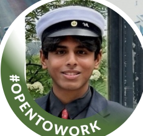

Summary

I am pursuing a double degree in Software Systems Engineering at LUT University, with core knowledge in C and Java, but my expertise lies in Python, bolstered by a Harvard certification. I also have basic HTML skills and gained significant C programming experience during Hive's Piscine boot camp in 2023. This diverse background highlights my dedication to learning and technical proficiency.
Education
Lappeenranta-Lahti University of Technology
August 2023 - June 2026(Expected)
- Working as a member of the Aether Guild
The English School
October 2020 - June 2023
- Assisted teachers during debate practice
- Represented my class in debate club
Maunulan Yhteiskoulu
August 2017 - June 2020
- Participated as head speaker in Model UN
- Achieved the highest score in Kangaroo test
- Assisted teachers during Model UN training
- Planned an international trip for the entire class
- Lead my class in athletic endeavors
Experience
Hive/Piscine Swimmer
June 2023 - July 2023
- Engaged in intensive coding tasks
- Developed an understanding in C, bash and cmd
JD Sports/Sales Assistant Manager
May 2023 - August 2023
- Learned customer service skills
- Accumulated an understanding to manage the till
- Managed inventory duties using database systems
Skills
Language Skills:
- English(Excellent)
- Finnish(Good)
- Hindi(Mother Tongue)
Software Skills:
- Python
- Microsoft Office
- C
- HTML
- Java
- Android Programming
- SQL
More Skills:
- Customer Service
- Inventory Management
- Till Management
Others:
- Was ranked top 11 in competetive tennis in Finland
- Represented Smash tennis club with a ratio of 6:1 in division matches